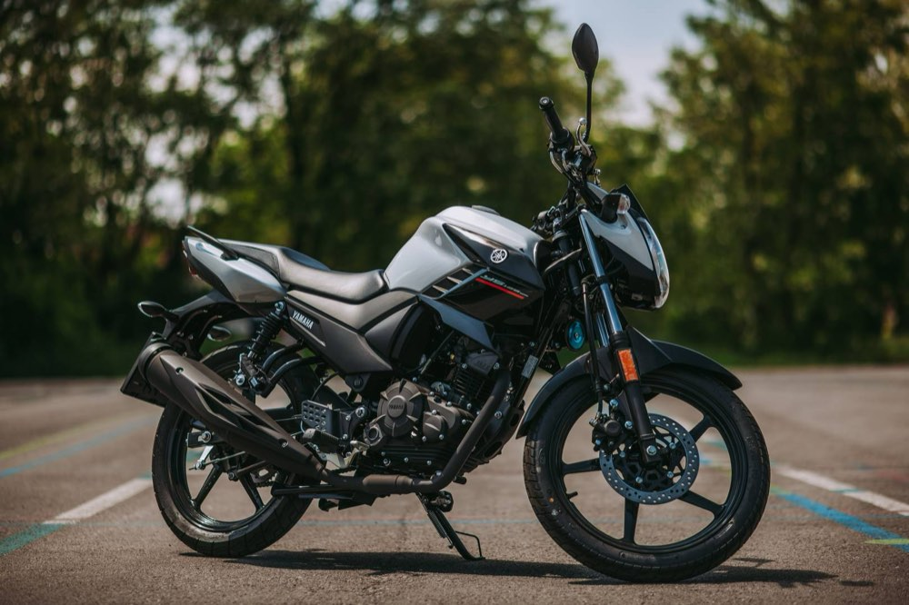
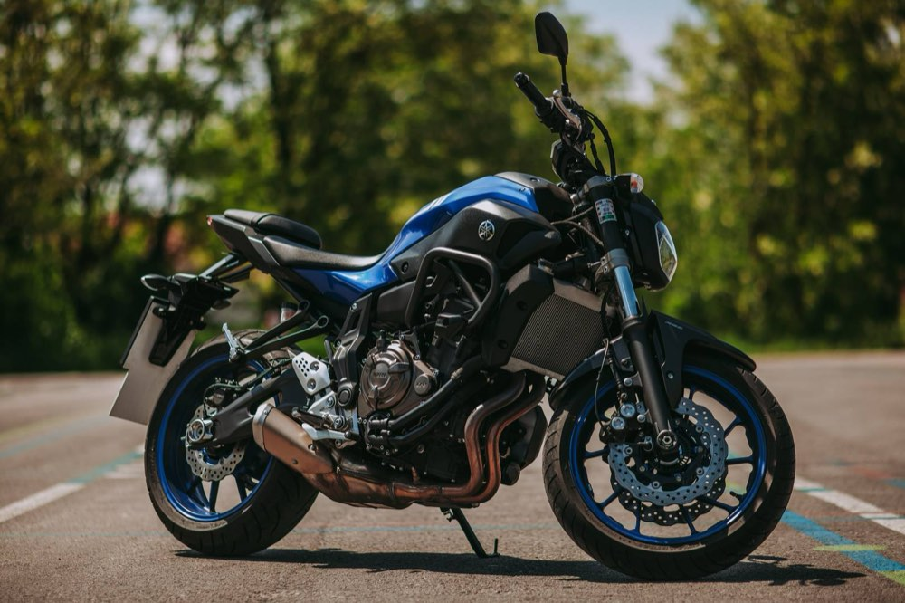
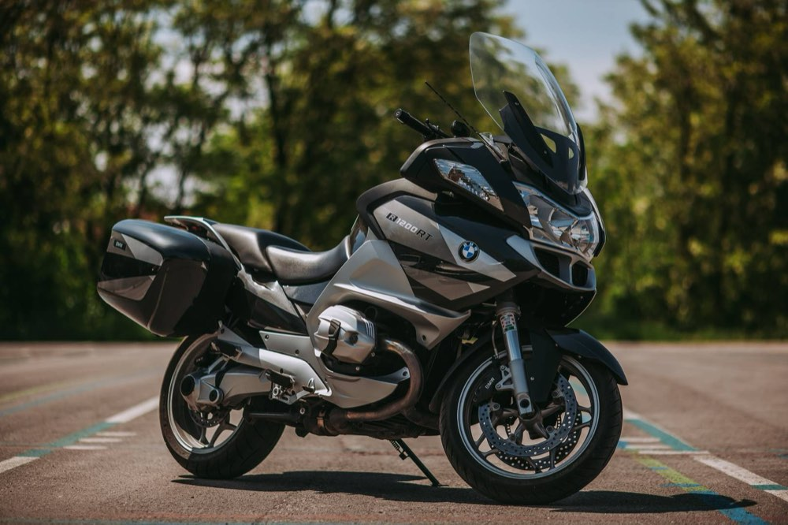
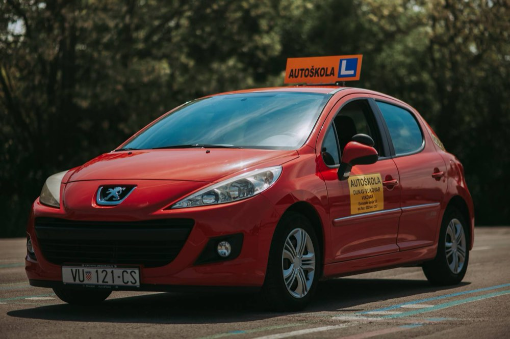
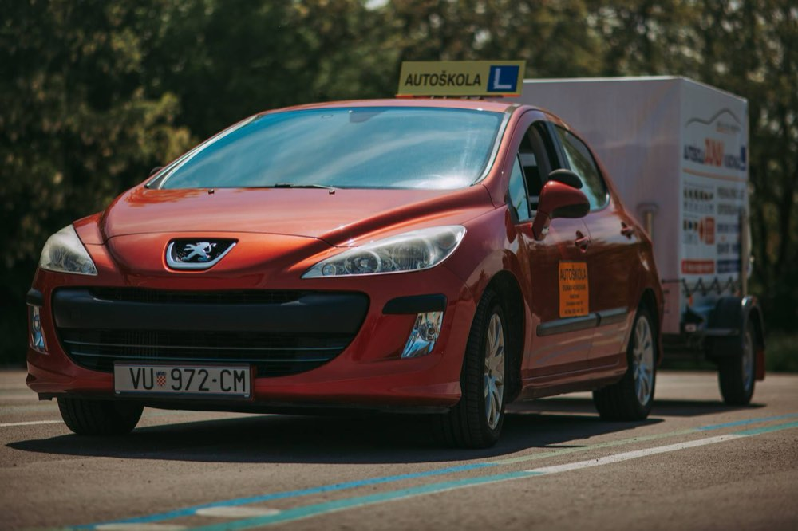
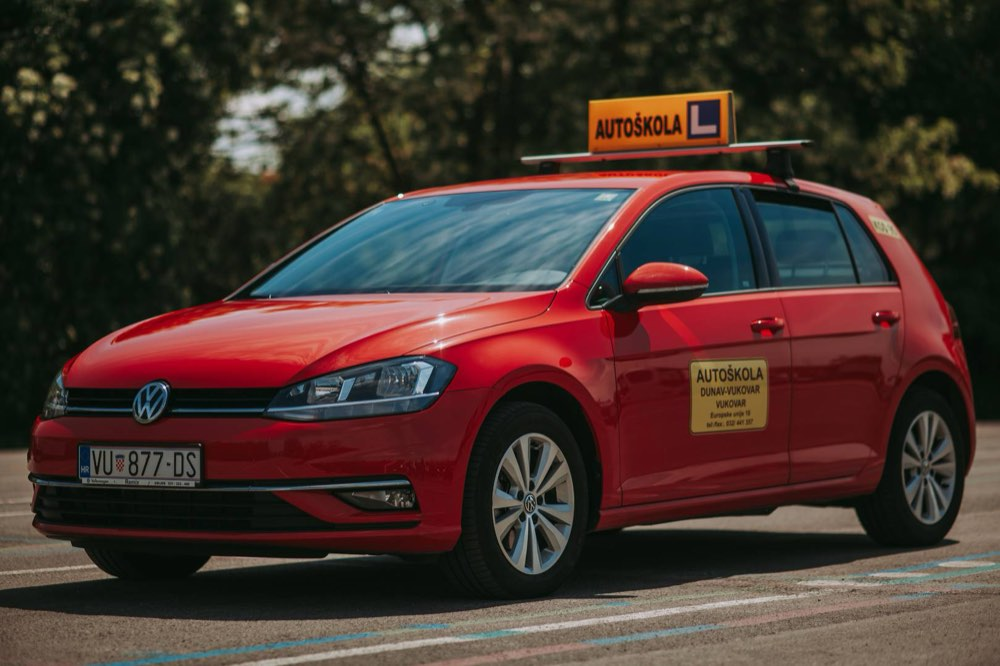
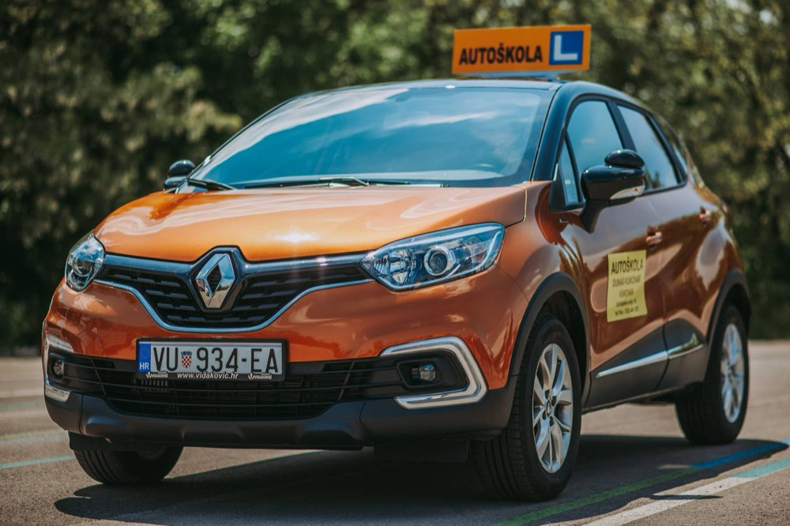
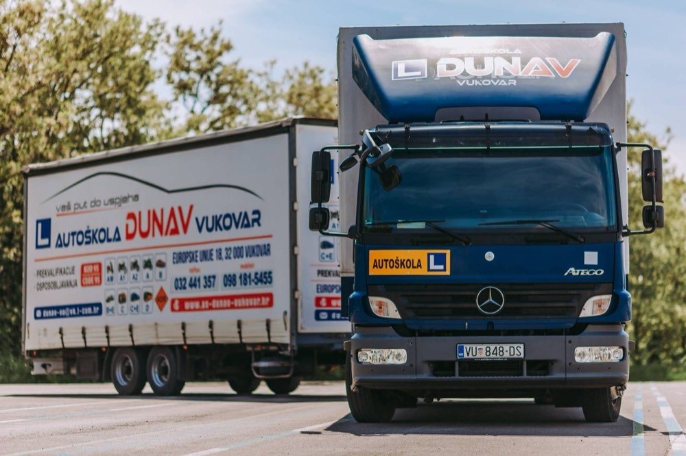
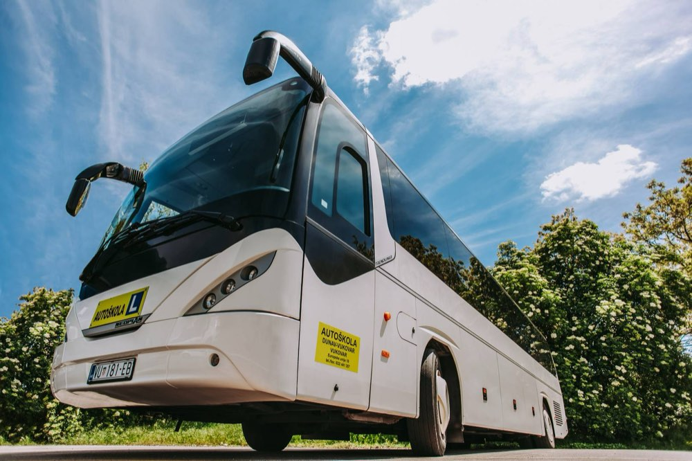
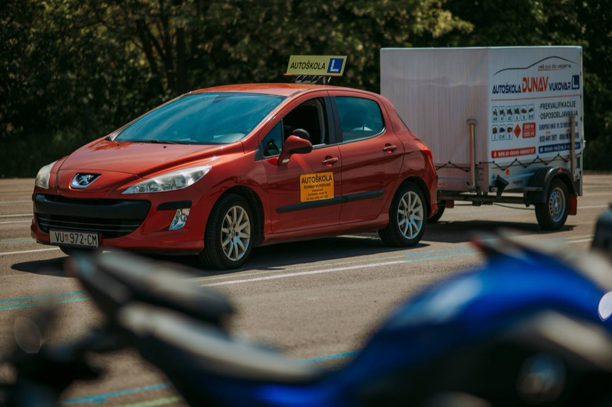

MotociklYamaha YS125
A1Četiri motocikla, šest automobila, kamion, autobus i dvije prikolice. Kod nas sami birate vozilo na kojem ćete učiti voziti.














| Kategorija | Vrsta vozila | Vozila autoškole |
|---|---|---|
| A1 | Laki motocikl | Yamaha YS125 |
| A2 | Motocikl srednje snage | Yamaha MT 07 |
| A | Motocikl | Yamaha MT 07 |
| B | Osobni automobil | Peugeot 207, Peugeot 308, VW Polo AW, VW Polo TDI, Golf 7, Renault Captur |
| BE | Automobil s prikolicom | Prikolica Pongratz |
| C | Kamion | Mercedes Atego |
| CE | Kamion s prikolicom | Prikolica Fliegl |
| D | Autobus | MAN Neoplan |
Osposobljavamo i za kategoriju DE. Za vozilo i termine nazovite nas na 098 181 5455.